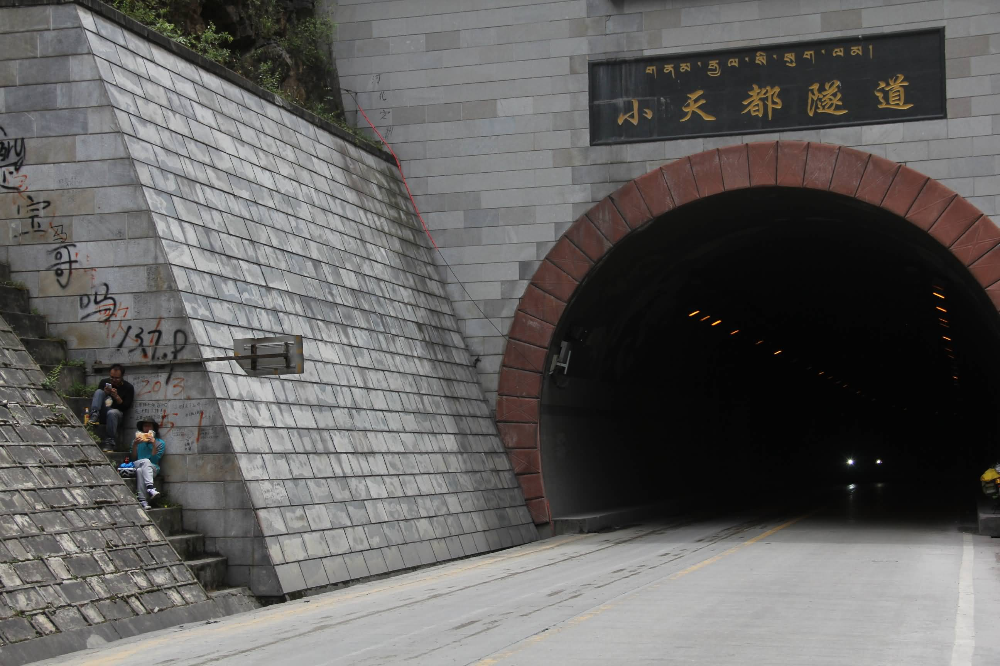
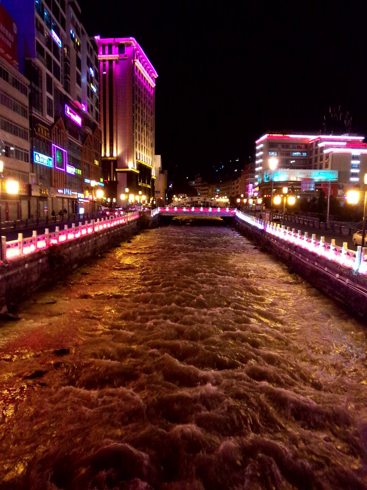

-
05.152014
- 此次骑行队友介绍！1.一米和小拖，一对小情侣，90后。2.骚包的逐迹哥。3.潇洒的远山哥。


-
05.152014
- 出发前晚上的聚餐火锅！第一次队友集体照


-
05.162014
- 武侯祠的出发前准备！第二次队友集体照


-
05.162014
- 第一次队友爆胎！还没有出成都市区，队友小拖就爆胎了，紧急换胎中


-
05.162014
- 成都-雅安 [155KM]路程155KM，相对于以后的路就是天堂，对于我、小拖和一米来说，还是有点累


- 1.雅安的标志：马踏飞燕。外号：立马滚蛋。2.队旗拿出来合照


- 3.入住的地方：东升竹庄。4.自行车骑友和摩托车骑友
-
05.172014
- 雅安-天全-新沟 [89KM]今天的休息点为新沟，选择新沟是为了明天翻越川藏线上的第一座山：二郎山


- 1.天全县吃饭的地方。2.第一个隧道：老虎嘴隧道，里面是石子路。3.入住的地方：柯大侠
-
05.182014
- 新沟-二郎山(隧道)-泸定 [51KM]今天的挑战：翻越二郎山。出发后天气不错：阴天，适合骑行


- 1.出发时天气不错，阴天适合爬山。2.山上烟雾缭绕，仿佛身处仙境。3.蜿蜒的盘山公路。


- 4.离二郎山隧道还有2KM。5.二郎山隧道前的合照。6.红色名城：泸定县。
- 由于到达泸定后时间还早，我们便约好一起去看泸定最出名的：泸定桥。


- 7.泸定桥。8.泸定桥上的合拍照。9.最会跳的逐迹哥
-
05.192014
- 泸定-康定 [51KM]今天的里程数不多，但是没想到是相当的累，原因是：天气太热了。

- 1.今天的午餐：大饼。2.天气太热了，休息下。3.到达午饭地点：小天都隧道。

- 4.到达康定。5.山上的石刻和潇洒的远山哥。6.康定夜景。
-
05.202014
- 康定-折多塘今天的目的地：折多塘村，为了明天翻越第一座海拔在4000+的折多山做准备
- 1.山哥的恋兔癖。2.到达入住地点，吃晚饭喽。3.逐迹哥你在惊讶什么。
- 4.远处的雪山。
-
05.212014
- 折多塘-折多山-新都桥今天的挑战：翻越折多山，海报4000+，翻越到一半时，高反了
- 1.视野开阔。2.折多山垭口。3.身后的白塔。

- 4.和妹子合照。5.在海拔4000+做跳起来的动作不容易。6.山哥的销魂一跳。
- 7.逐迹哥你看你猥琐不。8.合照没有我，原因板凳坐不下了。9.到达新都桥。
-
05.222014
- 新都桥休整一天，缓解下高反由于翻越第一座海拔在4000+的山，队伍全部不幸高反。
-
05.232014
- 新都桥-高尔寺山-雅江-相克宗 [92KM]
-
05.242014
- 相克宗-剪子弯山-卡子拉山-红龙乡今天是我不推车誓言破灭之时，由于连续翻越2座大山，体力和心理双重作用，
推车前行了500M，
后来发现推车还没有骑行快，还是继续骑行爬坡
-
05.252014
- 红龙乡-理塘
-
05.262014
- 理塘-禾尼乡
-
05.272014
- 禾尼乡-巴塘-金山江大桥-温泉山庄感悟：1.骑行金沙江段，逆风。2.金沙江段呼吸满嘴都是沙子。3.温泉山庄很坑爹
-
05.282014
- 温泉山庄-宗巴山-芒康
-
05.292014
- 芒康-拉乌山-如美-觉巴山教授客栈
-
05.302014
- 觉巴山教授客栈-登巴山-荣许兵站
-
05.312014
- 荣许兵站-东达山-左贡
-
06.012014
- 左贡-邦达
-
06.022014
- 邦达-业拉山-怒江72拐-怒江-八宿
-
06.032014
- 八宿-安久拉山-然乌
-
06.042014
- 然乌休整一天
-
06.052014
- 然乌-波密
-
06.062014
- 波密-通麦-排龙乡
-
06.072014
- 排龙乡-鲁朗
-
06.082014
- 鲁朗-色季拉山-八一
-
06.092014
- 八一-工布江达
-
06.102014
- 工布江达-松多
-
06.112014
- 松多-米拉山-拉萨